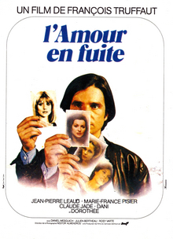

François Truffaut
1979
94 minutes
This fifth installment in Truffaut's saga of Antoine Doinel is quite literally Antoine Doinel: The Clip Show. An enormous chunk of this film is previous footage from the other four movies, which seems hilariously audacious for something as pretentious-seeming as a French New Wave film, even a late one. It's not outright bad, but it is mostly composed of filler and flashbacks, the greatest hits of the other four films. If you're reading these pages and watching these films in such a way that you hit them out of order, then these flashbacks will be flash-forwards for you. The best parts of this film are the best parts of those other films. At least you have your popcorn on your lap and you're watching it on a big screen, even if you paid ten bucks for the ticket and eight bucks for the popcorn.
The flashbacks from The 400 Blows remind you of your Asian friend from middle school who ended up in juvie for turning the pool purple.
The flashbacks from Antoine et Colette make you wonder how your father's life might have been different if he'd paid more attention and watched these films as a kid.
The flashbacks from Stolen Kisses remind you of all some of the odd jobs your father worked when he was in his 20's.
The flashbacks from Bed and Board remind you of your mother's stories of your father's infidelities throughout their doomed marriage.
There are some new bits as well, and you have what passes for a bittersweet and happy ending for Antoine Doinel, as brought about by the welcome intervention of Colette from the second film, who actually matured in a way you can be proud of. It's something to love in this stupid cheesy clip-show of a movie.
Time to choose something different: